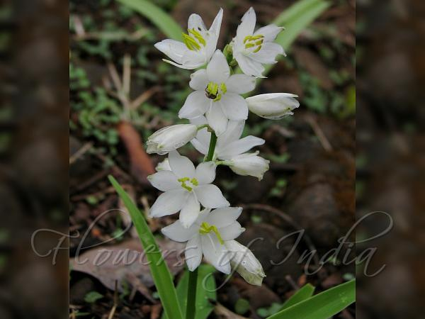
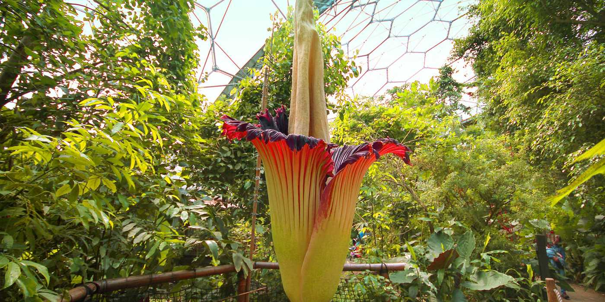
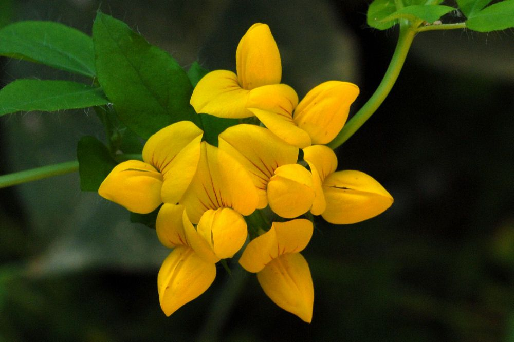
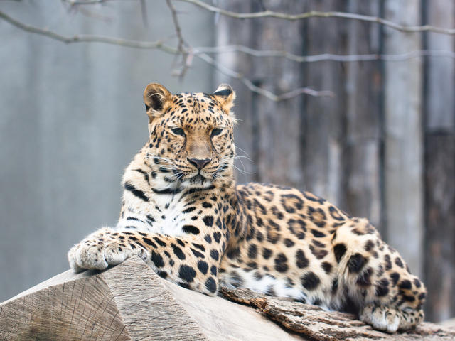
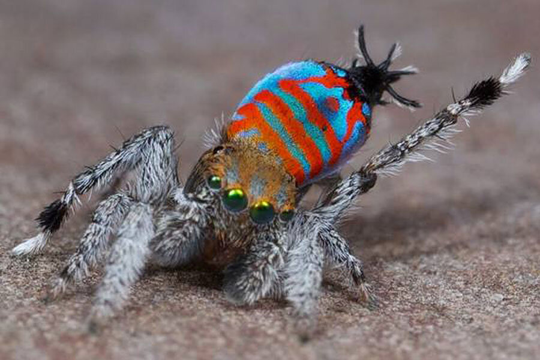
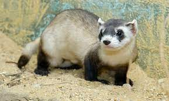

Gloriosa is a genus of 12 species in the plant family Colchicaceae, and includes the formerly recognised genus Littonia. They are native in tropical and southern Africa to Asia, and naturalised in Australia and the Pacific as well as being widely cultivated.[2] The most common English names are flame lily, fire lily, gloriosa lily, glory lily, superb lily, climbing lily, and creeping lily.
Gloriosa are herbaceous perennials that climb or scramble over other plants with the aid of tendrils at the ends of their leaves and can reach 3 meters in height. They have showy flowers, many with distinctive and pronouncedly reflexed petals, like a Turk's cap lily, ranging in colour from a greenish-yellow through yellow, orange, red and sometimes even a deep pinkish-red.
"Scandent herbs, the rootstock a horizontal rhizome, the stem leafy, the leaves spirally arranged or subopposite, the upper ones with cirrhose tips; flowers solitary, large, boner on long, spreading pedicels, actinomorphic, hermaphrodite; perianth segments 6, free, lanceolate, keeled within at base, long-persistent; stamens 6, hypogynous, the anthers extrorse, medifixed and versatile, opening by longitudinal slits; ovary superior, 3-celled, the carpels cohering only by their inner margins, the ovules numerous, the style deflected at base and projecting from the flower more or less horizontally; fruit a loculicidal capsule with many seeds"
Chlorophytum tuberosum

Chlorophytum tuberosum (Roxb.) Baker
Chlorophytum tuberosum is one of several species of Chlorophytum used in Ayurvedic medicine, the traditional Hindu system of medicine. Safed musli, as it is known in Hindi, is a herb commonly found in forest patches in India, and is used in a tonic intended to give strength and vigour. The spider plant (C. comosum), of which the variegated form is a popular houseplant, is a member of the same genus and is native to Africa, where the genus Chlorophytum is most diverse.
widespread from Nigeria to eastern tropical Africa, and also found across central and southern India to Burma (Myanmar). Chlorophytum tuberosum normally grows at up to 1,700 m above sea level, but has been found at the summit of the Travancore Range in India at 2,695 m above sea level. It occurs in woodland, bushland or grassland, often in degraded vegetation, and in India is also found in mixed forest.
Titan arum

Titan arum, (Amorphophallus titanum), also called corpse flower, herbaceous flowering plant of the arum family (Araceae), known for its massive foul-smelling inflorescence (cluster of flowers). The plant is endemic to the steep hillsides of rainforests in western Sumatra but is cultivated in botanic gardens worldwide. The unusual short-lived flower structure is the largest unbranched inflorescence of any plant and smells of rotting flesh. Usually taking 4–10 years or more between flowerings, a titan arum is often a major tourist attraction when in bloom.
Like other members of the arum family, the massive inflorescence of the titan arum consists of an inner flower spike, known as a spadix, surrounded by a petal-like collar known as a spathe.
Birds foot Trefoil

Birdsfoot trefoil (Lotus corniculatus L.) is a common pasture legume. It is well adapted to poorly drained, acidic soils. It is shallow rooted and therefore performs poorly on sandy soils. It is the only forage legume used in eastern North America not known to cause bloat. It can reseed itself, resulting in long-lived stands.
Three types of birdsfoot trefoil are available: prostrate, erect, and semierect. Prostrate types are low growing, more winter hardy, have less vigorous seedlings and recover more slowly than the more erect types. The prostrate types are more adapted to grazing. The erect types are best for haying. Semierect types are dual purpose and are the most commonly grown.
Amur Leopard

The Amur leopard (Panthera pardus orientalis) is a leopard subspecies native to the Primorye region of southeastern Russia and northern China. It is listed as Critically Endangered on the IUCN Red List. In 2007, only 19–26 wild leopards were estimated to survive in southeastern Russia and northeastern China.[1] It was considered as one of the rarest cats on Earth.[3]
As of 2015, fewer than 60 individuals were estimated to survive in Russia and China.[4] Camera-trapping surveys conducted between 2014 and 2015 revealed 92 individuals in an 8,398 km2 (3,242 sq mi) large transboundary area along the Russian-Chinese border.[5] In 2019, it was reported that the population is close to 90 leopards.[6]
Results of genetic research indicate that the Amur leopard is genetically close to leopards in northern China and Korea, suggesting that the leopard population in this region became fragmented in the early 20th century.[7] The North Chinese leopard was formerly recognised as a distinct subspecies P. p. japonensis, but was subsumed under the Amur leopard in 2017.
The Amur leopard differs from other leopard subspecies by its thick fur that is pale cream-colored, particularly in winter. Rosettes on the flanks are 5 cm × 5 cm (2.0 in × 2.0 in) and widely spaced, up to 2.5 cm (0.98 in), with thick, unbroken rings and darkened centers.[16] Its fur is fairly soft with long and dense hair.
African Wild Dog
The African wild dog is known by many names, including Cape hunting dog or painted dog. Its scientific name, Lycaon pictus, means “painted wolf,” referring to the animal's irregular, mottled coat, which features patches of red, black, brown, white, and yellow fur. Each animal has its own unique coat pattern, and all have big, rounded ears.
These long-legged canines have only four toes per foot, unlike other dogs, which have five toes on their forefeet.
Though they were once found throughout the continent—from desert to mountain habitats—African wild dogs have disappeared from most of their geographic range. These days, African wild dogs typically roam the open plains and sparse woodlands of sub-Saharan Africa. Their largest populations can be found in Botswana, Zimbabwe, Namibia, Zambia, Tanzania, and Mozambique.
Sparkle muffin Spider

If you don't think of spiders as cute and cuddly, then you’ve never met Sparklemuffin, Skeletorus, and the elephant spider. Scientists have identified these three new species of peacock spiders in various parts of eastern Australia.
Less than a quarter-inch long (five millimeters), male peacock spiders are known for their bright colors and a rolling-shaking mating dance that would make Miley Cyrus jealous.
Skeletorus (Maratus sceletus) got its name from the white markings on the males' dark limbs, which give them the look of a skeleton. Sparklemuffin was the pet name Maddie Girard, a Ph.D. student at the University of California, Berkeley, gave Maratus jactatus, which has blue and red stripes on its midsection. The report describing these spiders was published on January 20 in the journal Peckhamia.
Black-Fotted Ferrret

Once found throughout the Great Plains, the black-footed ferret is one of North America’s most endangered animals. They rely on prairie dogs for food and their burrows for shelter and raising young. Consequently, their fate is directly linked to that of prairie dogs. As a result of habitat loss and non-native disease, black-footed ferret populations declined to the brink of extinction in the 20th century.
Captive breeding efforts and reintroductions into the wild have given black-footed ferrets a second chance for survival. Although great strides have been made to recover them, habitat loss and disease remain key threats and recovery of the species will not be complete until more ferrets exist in more places.
Currently, fewer than 500 black-footed ferrets live in the wild today at 17 reintroduction sites—a population well below the 3,000 needed to fully recover the species. WWF is helping to reach this goal by restoring and protecting ferrets and their prairie dog habitat in seven locations in the Northern Great Plains.